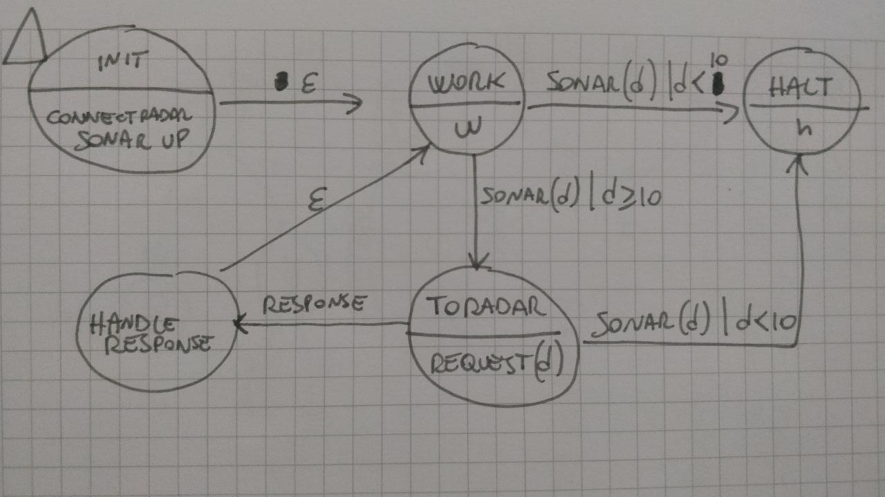
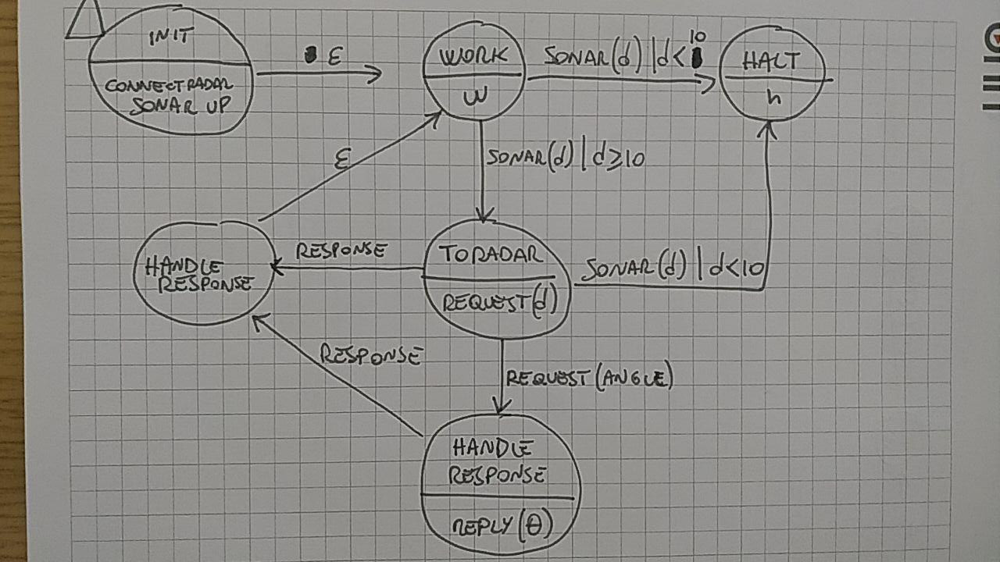

Bottom-Up FSA implementation - Michele Proverbio
Requirements
Build a bottom-up implementation of a FSA describing the behaviour of a robot with those specifics:
- the robot moves forward until an obstacle is detected
- the robot must send sonar data to a radar with a request-response pattern
Expand the previous requirements: the radar might request an angle to the robot before responding to the request sending the sonar data.
Requirement analysis


Problem analysis
The FSA is implemented through a transition matrix and an event loop that checks if a tarnsition gets applied.
States actions are implemented by procedures that get called by the event loop once a transition gets activated.
The current state is stored in a variable.
By Michele Proverbio email: michele.proverbio@studio.unibo.it